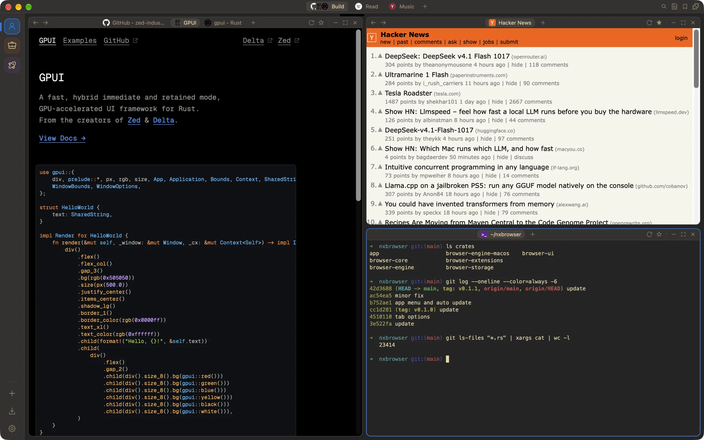
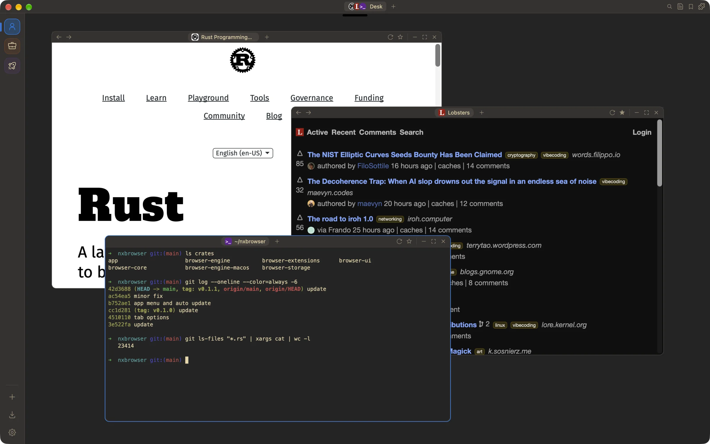
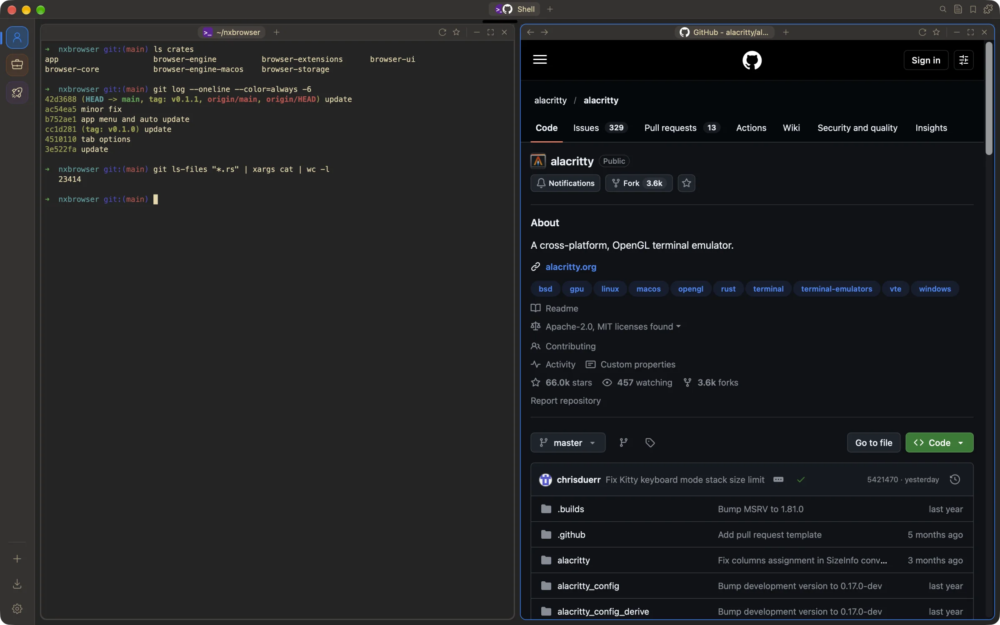
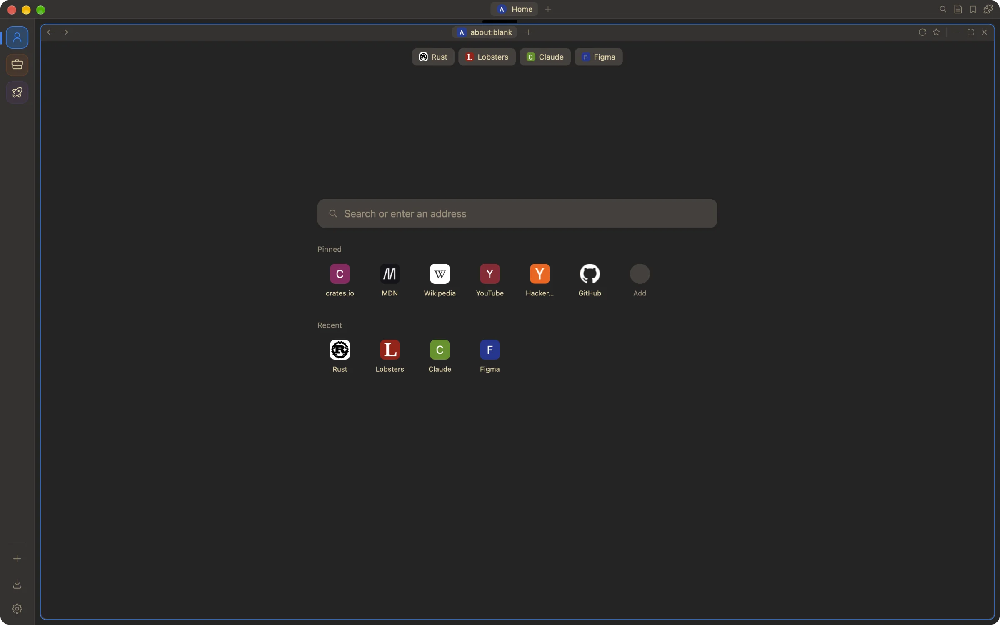
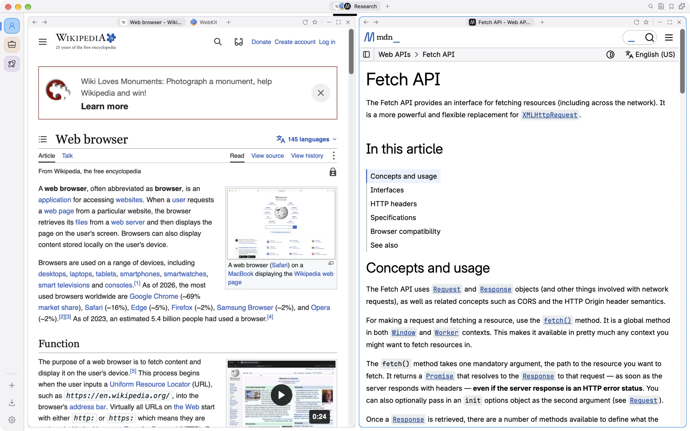

NxBrowser is a fast, keyboard-first web browser for macOS, written in Rust. GPU-drawn interface, Safari's WebKit engine, Chrome extensions, isolated profiles and a real terminal built in.
$brew install --cask abeldzan/tap/nxbrowser
Every space is a stage. Windows tile automatically as a split tree, or float freely and snap to halves and quarters. Each window can hold its own tabs.

Terminal tabs (⌥⌘T) run your login shell, tile with your pages and come back in the same folder after a restart.
alacritty_terminal
Search tabs, bookmarks, history, spaces, profiles, extensions and every action. Change settings in place, do quick sums, and search other sites with bangs.
@tabs @bookmarks @history @actions @spaces!yt !gh !w !mdn !crates !claude and 20 more12*(3+4) and the answer is copiedThe new-tab page shows your pinned sites, recent visits and bookmarks. Address bar suggestions come from history, bookmarks and your search engine.

Pick a theme and accent color, comfortable or compact density, and reduced motion. Every shortcut can be rebound in Settings.

The things you expect from a daily browser, built in instead of bolted on.
Each profile has its own WebKit data store: cookies, logins, storage and extension data never cross over. Private profiles are wiped at launch.
Chrome Web Store extensions, MV2 and MV3, run unmodified on WebKit's native extension runtime. Enabled per profile.
AES-256-GCM, key in the Keychain, Touch ID to reveal. Generator, health checks and CSV import/export.
Built-in content rules, pop-up blocking, HTTPS-only mode and fraud warnings. Per-site camera and mic permissions.
Built on GPUI and Metal. Web views are created lazily, and background tabs are suspended so they use no memory.
Sessions are saved continuously. A crash or restart brings every window, tab and terminal back. Updates install themselves.
These are the defaults. Every one of them can be changed.
One line with Homebrew. It keeps itself up to date after that.
$brew install --cask abeldzan/tap/nxbrowserApple Silicon, macOS 14 or newer. The app is ad-hoc signed, not notarized; the cask clears the quarantine flag for you.